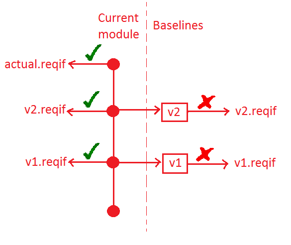
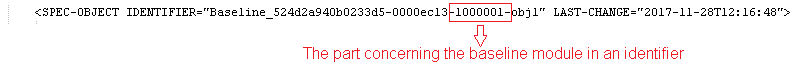
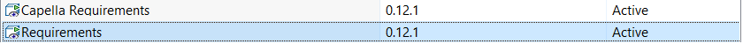

Limitations
No compatiblity with previous prototypes
- This version is not compatible with previous prototypes (0.5.x) due to some blocking issues fixes identified during prototype validation.
The .capella.bridgetraces file for the iterative import has been modified for persistence ReqIf IDs.
Export ReqIf limitation with DOORS
- ReqIf file exported from a base-lined DOORS module does not contain any link. If you intend to export links to ReqIf, the current module should be used instead of baselined one. This issue will be fixed in DOORS 9.6.1.11.
- ReqIf elements exported from a base-lined module do not have the same identifiers than the current module. This comes from the fact that with DOORS, a base-lined module is a snapshot of the current module. Thus, we recommend not to rely on base-lined module to export ReqIf file, otherwise export a ReqIf module from the current module in parallel with baselines.
-

- However, if you must use the base-lined modules, a workaround is to make sure that elements from base-lined modules have the same identifiers by removing the baseline part in all elements' identifiers. Note that this workaround only works with base-lined modules, comparing a base-lined one with the current module is still not possible.
-

Import limitation
- OLE elements or images are not imported in Capella even if they are present in the ReqIF source file.
Diagrams/Tables requirement allocations
- Allocation of requirements from/to diagrams or tables can only be performed in the Properties view when the diagram is selected, it is not possible to create allocation links from/to diagrams or tables when a Requirement is selected
Allocation links reach (Models and Libraries)
- Allocations links or Internal Relation links can only be created from elements in an architecture level to elements in the same architecture level or in an upper architecture level in the same model
- In a Project/Library, the Requirement model can not reference elements from a referenced Library (e.g model elements, Data Types, Attribute Definitions...). Anyway, it is possible to create Allocation links or Internal Relation links inside a library seen from a model/library in Read/Write mode
Hidden viewpoint
Along with the 'Capella Requirements' viewpoint, another hidden 'Requirements' viewpoint is referenced.

To correctly unreference the Requirements Viewpoint check the
Unreference the viewpoint
(online documentation) section.
Other limitations
- Requirements allocation can only be done on elements belonging to the Capella metamodel or an inheriting Metamodel (+ Sirius' diagrams and table). If additional Viewpoints are used, they must inherit from the Capella metamodel to work with the Requirements Viewpoint
- There is no way to export elements of the Requirements VP. So changes done in the Requirements model (changed/created Requirements, created Allocations or Internal Links...) will stay in the model and it will not be possible to export them in a Requirement Management tool (e.g. DOORS).